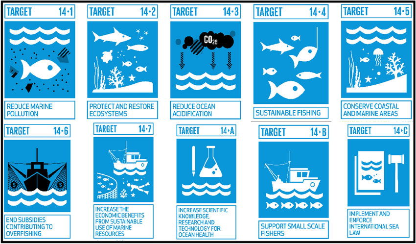
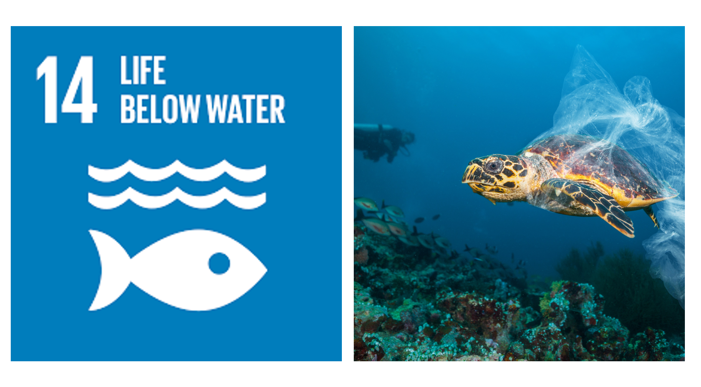
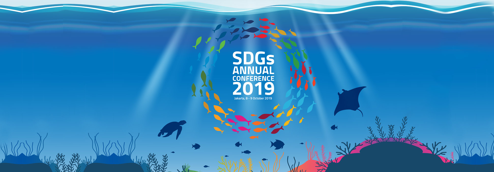
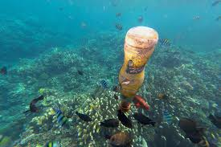
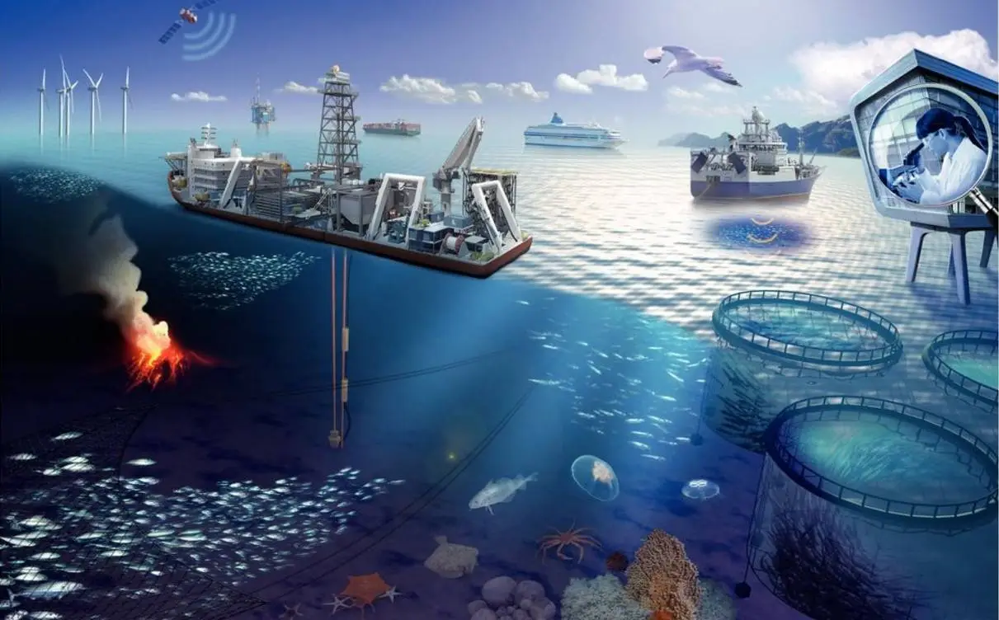

.png)


    
Dari 17 tujuan SDGs, saya memilih tujuan ke-14 yaitu Ekosistem Lautan. Karena tujuan ini sangat menarik dan penting bagi saya. Terutama bahwa ekosistem lautan Indonesia itu termasuk yang paling parah di dunia saat ini. Banyak sekali sampah-sampah berserakan dan berkurangnya atau menghambatannya rantai ekosistem di laut. Maka dari itu, saya ingin sekali mengetahui lebih dalam lagi, apa saja dan bagaimana Indonesia melakukan kerja sama dan hubungan dengan negara lain untuk memperbaiki dan mengembangkan ekosistem lautannya.
SDG 14, atau "Life Below Water," bertujuan untuk melindungi laut dan menggunakannya dengan cara yang tidak merusak. Tujuan ini mencakup beberapa target khusus, seperti mengurangi sampah di laut yang berasal dari aktivitas manusia, menjaga habitat laut yang penting seperti terumbu karang dan hutan bakau, mengatur penangkapan ikan agar tidak berlebihan, serta melawan cara menangkap ikan yang merusak. SDG 14 juga mengajak kita untuk melakukan penelitian dan mengembangkan teknologi yang ramah lingkungan agar bisa menjaga kesehatan laut.
Tujuan ini sangat penting bagi Indonesia karena negara kita punya garis pantai yang sangat panjang dan banyak sekali kekayaan laut. Laut di sekitar Indonesia menyediakan makanan, pekerjaan, dan sumber penghidupan bagi jutaan orang yang tinggal di daerah pesisir. Selain itu, terumbu karang dan mangrove di Indonesia bukan hanya mendukung keanekaragaman hayati laut, tapi juga bisa melindungi kita dari bencana seperti tsunami dan abrasi pantai. Kalau laut kita rusak, bisa berdampak besar pada ekonomi, keamanan pangan, dan kesejahteraan masyarakat.
Bagi negara-negara lain, terutama yang juga bergantung pada laut, SDG 14 penting untuk menjaga iklim dunia tetap stabil. Laut menyerap sekitar 30% dari karbon dioksida yang dihasilkan manusia dan juga menyerap panas berlebihan akibat perubahan iklim, sehingga sangat penting untuk mengatur suhu bumi. Selain itu, menjaga kelestarian laut juga penting untuk ekonomi global, karena perikanan dan pariwisata laut merupakan sumber pendapatan bagi banyak negara. Kerja sama antarnegara dalam mencapai SDG 14 sangat diperlukan agar laut bisa dimanfaatkan dengan baik dan tetap lestari untuk generasi mendatang.